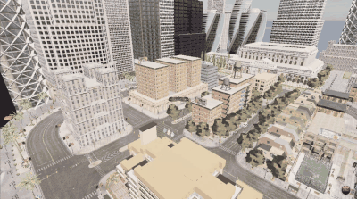

无人机键盘控制（uav_keyboard_control）
任务①「无人机仿真 + 键盘控制」的 ROS 侧实现：把终端按键转换为机体系速度指令，
发布到 /uav/cmd_vel，由 carlair_ros_bridge 连仿真器执行。仿真/坐标换算/安全限幅
集中在桥接层，键盘、规划器、神经网络控制器共用同一条指令通道。
1. 运行架构
终端按键 ──► uav_keyboard_control ──/uav/cmd_vel──► carlair_ros_bridge ──► CarlaAir/AirSim
(raw 模式读键) (geometry_msgs/Twist) (坐标换算+执行) (无人机)
2. 按键映射
机体系（x 前 / y 左 / z 上）：
| 按键 | 动作 | Twist 分量 |
|---|---|---|
W / S |
前进 / 后退 | linear.x = ±horiz_speed |
A / D |
左移 / 右移 | linear.y = ±horiz_speed |
R / F |
上升 / 下降 | linear.z = ±vert_speed |
Q / E |
右转 / 左转 | angular.z = ±yaw_rate |
| 松开 | 悬停 | 全零 |
ESC |
退出 | — |
Q/E 的方向遵循 AirSim 机体系 yaw_rate 约定（Q=+yaw_rate 机头右转）。
3. 编译与运行
# 终端 1：桥接（连仿真 + 执行 + 自动起飞悬停）
source ~/bridge_ws/devel/setup.bash
roslaunch carlair_ros_bridge main.launch
# 终端 2：键盘控制
source ~/bridge_ws/devel/setup.bash
roslaunch uav_keyboard_control main.launch
把焦点放在键盘控制终端，按 W/A/S/D/R/F/Q/E 操控，松开即悬停，ESC 退出。
4. 实现要点
4.1 终端 raw 模式
Linux 终端默认行缓冲（要按回车），用 termios+tty 进入 raw 模式即可单键即时响应：
with RawKeyReader() as reader: # __enter__ 切 raw，__exit__ 恢复
key = reader.get_key(timeout=0.03) # select 非阻塞读一个字符
with 语句保证 Ctrl-C 或异常退出时也能恢复终端设置，不会把用户的终端卡在 raw 模式。
4.2 按键 → 速度：纯函数
key_to_cmd(key, horiz, vert, yaw) 把按键映射为 (vx, vy, vz, wz)，
step_once 再打包成 geometry_msgs/Twist。两者都不依赖 ROS/终端，
可在无 ROS 的机器上单元测试（tests/test_keyboard_local.py，35 项）。
4.3 松开即悬停
节点以 30 Hz 持续发布：按键按下发对应速度，松开/未知键发全零。桥接层的
cmd_vel_sub 有「超过 cmd_timeout 无指令自动悬停」的安全保护，这里再叠加一层
显式零速度，双保险防止无人机失控。
5. 与视口内置 WASD 的关系
CarlaAir 视口内置键盘操控（任务①的「仿真」部分），本模块提供 ROS 侧键盘控制
（任务①的「键盘控制」部分）。两者可对比验证：视口 WASD 直接驱动仿真器，
本模块走 键盘 → /uav/cmd_vel → 桥接 → 仿真器 的完整 ROS 链路，正是后续
规划器、神经网络控制器的通用入口。
6. 效果图
键盘控制演示（录屏转 GIF，W 前进 / A 左移 / D 右移 / R 上升 / Q 右转 机动，第三人称视角）：
